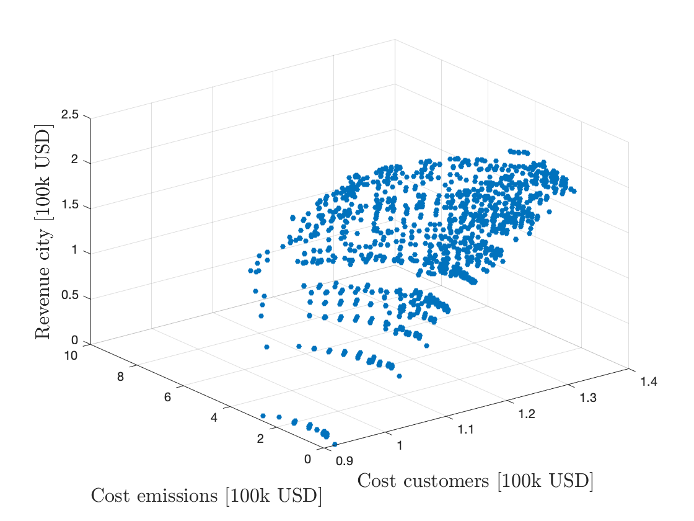
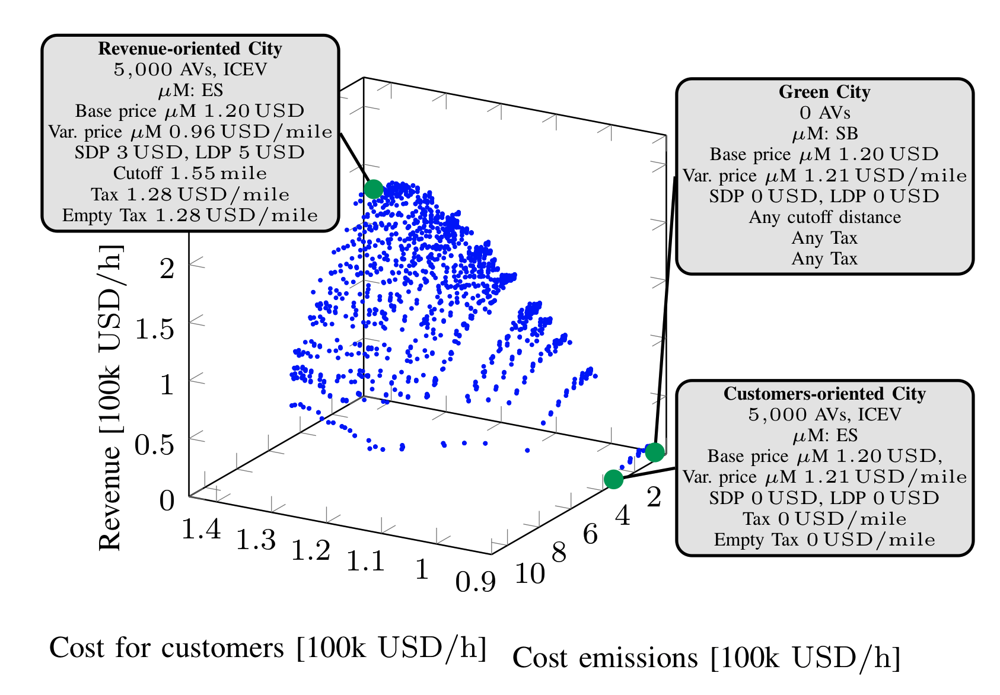
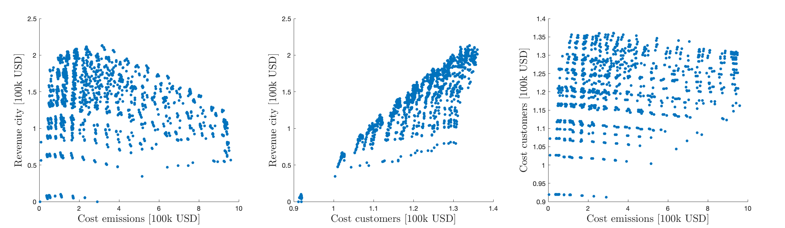
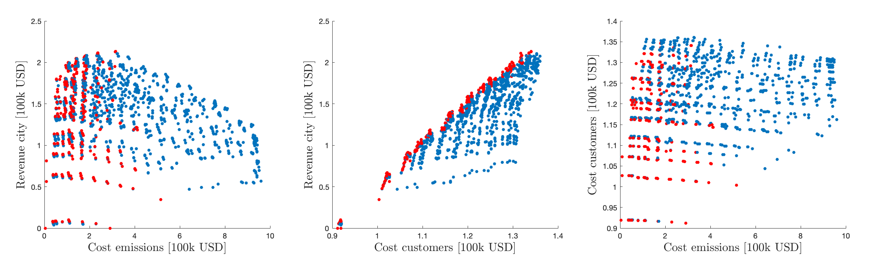
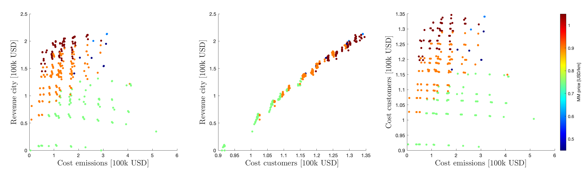
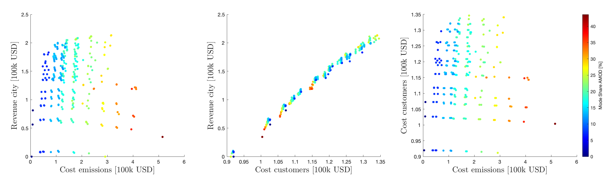
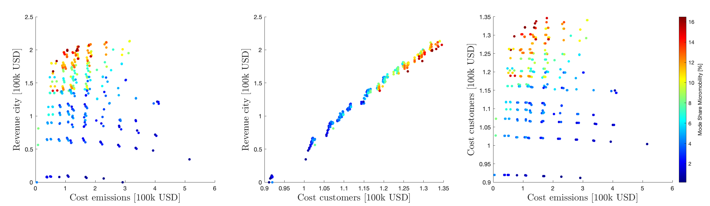
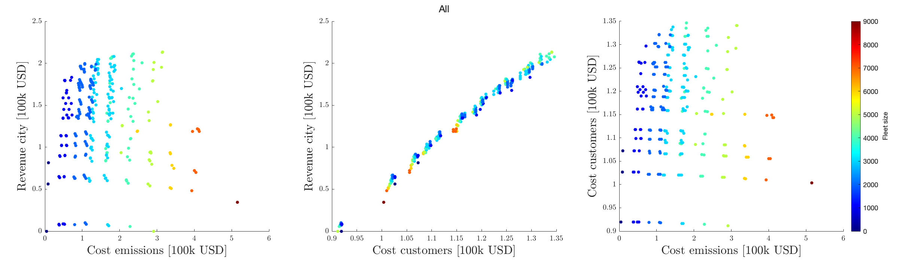
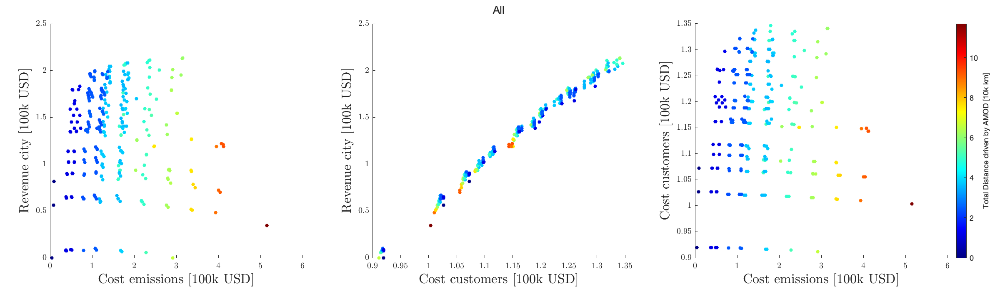
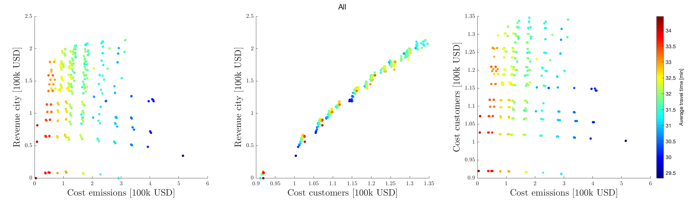

Game Theory to Study Interactions between Mobility Stakeholders
In the following we report an extended list of figures and explanations related to our recent submission to ITSC 2021.
To give context, the following results are related to a case study for the city of Berlin, Germany.
As described in the article, we consider a sequential game in which a municipality chooses the entity of taxes on Mobility Service Providers (MSPs) (including taxes on full and empty miles driven by vehicles) as well as public transit prices (short-distance and long-distance) and cutoff distances.
Consequently, we assume that a AMoD MSP, a micromobility MSP, and a standard taxi MSP take decisions based on the policies defined by the municipality.
The AMoD MSP chooses a specific fleet size, a propulsion system for the autonomous vehicles (AVs), and their automation level.
The micromobility MSP chooses a vehicle type (between e-scooters (ESs) and shared bikes (SBs)), a base price, and a variable, distance-dependent price.
Finally, the taxi MSP chooses a base price and a distance-dependent price for her services.
The equilibria of the sequential game are computed via backward induction.
We first report the Nash Equilibria (NE) of the simultaneous game between MSPs, with respect to three metrics defining social welfare: customers cost, emissions, and public revenue.

The equilibria for the sequential game, depend on the objective of the municipality.
We hereby report three different cases: a revenue-oriented city, a emissions-oriented city, and a customers-oriented city.
We detail the actions for each equilibrium.

Clearly, these are just extreme examples and are useful to explain the concept. The choice of the city profile is a purely political questions, and the framework is flexible in this sense.
Ideally, from the perspective of a socially-aware municipality, it is desirable to obtain high revenue, low emissions, and low customer cost.
Clearly, the previous figures suggest that the trade-offs characterizing the game do not allow for such scenarios.
For instance, lowest emissions are reachable with no public revenue, and a cost for customers 0.9 % larger than the potentially obtainable one.
Therefore, one needs to come to terms with such fundamental trade-offs, and our framework provides a way to reason about solutions.
To do so, we first look at the 2D projections of the equilibria.

While one cannot a priori choose an equilibrium, one can identify solutions which are always incovenien, i.e. the ones are always better than others (lower emissions cost, lower customers cost, and higher city revenue).

Interestingly enough, NE yielding high emissions are always dominated, i.e., never rational.
Thanks to these figures, we can study trade-offs- For instance, by lowering public revenue from 200'000 USD/h to 150'000 USD/h (i.e., a 25% reduction) leads to 50% lower emissions and 10% lower cost for customers.
Furthermore, we can "zoom-in" and analyze the actions corresponding to each solution. In the following we report a sample of these statistics.
Here w.r.t micromobility prices:

Here w.r.t AMoD mode share:

Here w.r.t micromobility mode share:

Here w.r.t micromobility mode share:
Here w.r.t AMoD fleet size:

Here w.r.t AMoD driven distance:

Here w.r.t average travel time:
